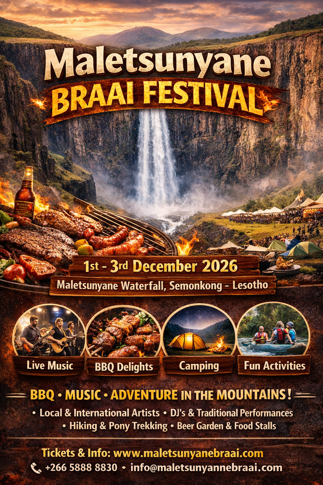
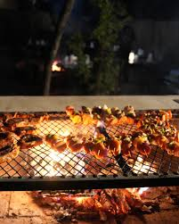

The Maletsunyane Braai Festival 2026 is an exciting outdoor food and cultural event held at the famous Maletsunyane Falls in Semonkong, Lesotho. The festival celebrates Basotho culture through delicious braai (barbecue) food, live music performances, and a variety of adventure activities. Visitors from different places gather to enjoy grilled foods, etertainment from local and iternational artist, camping experiences and outdoor activities such as hiking and pony trekking while surrounded by the beautiful mountain scenery. The event also aims to promote tourism, support local businesses and showcase the natural beauty and cultural heritage of lesotho, making it a unique and memorable experience for both locals and tourits.
The Maletrsunyane Falls Braai Festival is designed as a tourism and community event that highlight both local talent and natural attraction of Maletsuyane Falls. The festival include cooking competitions where participants showcase their braai skills, as well as stall for local vendors to sell food, crafts and souvenirs. It also creates jo opportuities for the local commuity and helps boost the economy of Semonkong. Safety measures, guided tours to the falls, and organized seating areas are provided to ensure visitors have comfortable and enjoyable experience. Overall, the festival plays an important role in promoting sustainable tourism while supporting communitydevelopment.
Date:1-3 December 2026
Location:Maletsuyane Falls,Semonkong,Lesotho


